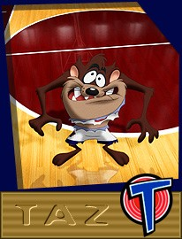

© 1996 Warner Bros.
© 1996 Warner Bros.

"Taz"The youngest and, according to some, the most exciting of the Warner Bros. classic cartoon characters is Bugs' most mindless, most ferocious antagonist, The Tasmanian Devil. Baroque enough that there should be such a cartoon character as a Tasmanian Devil; a name would just be excess baggage.
Taz has now become one of the most popular in the entire Looney Tunes gallery. He was literally thrown away when Warner supervisor Ed Selzer forbade his director, Bob McKimson, to bring him back for any more encores after his premiere appearance in Devil May Hare in 1954. But when Jack Warner started to miss the little Devil, and ask when he was going to show up again, Selzer had to rescind that order.
When Mel Blanc began to develop a voice for this new character, he asked, all innocence, "What does he sound like?" and was told, "Nobody has ever heard one." So he was compelled to ad-lib some kind of glottal-guttural gravelly gargle, now lovingly described as "Taz-speak."
© 1996 Warner Bros.